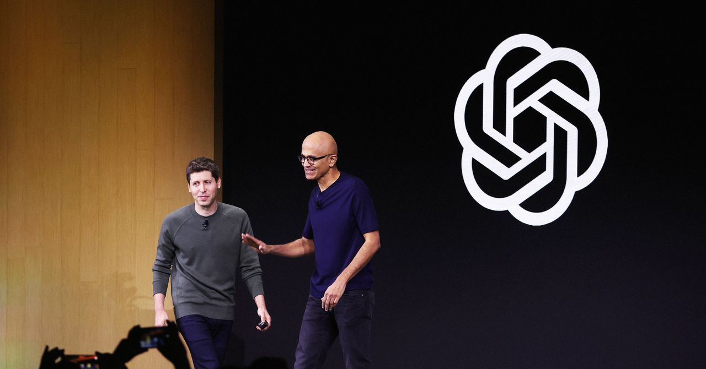
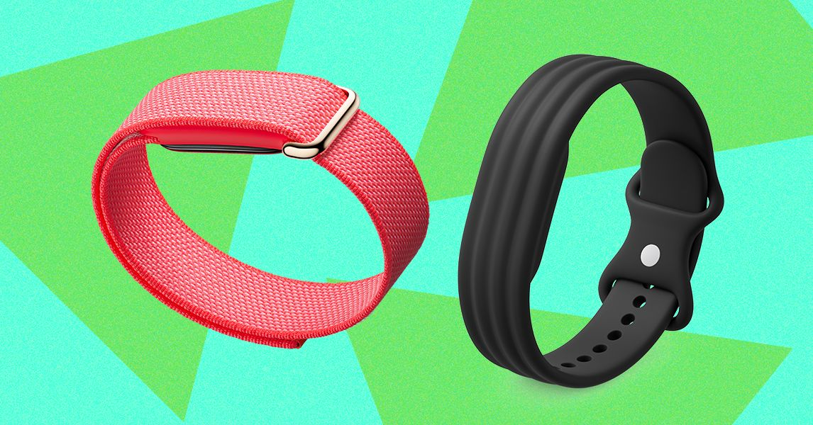
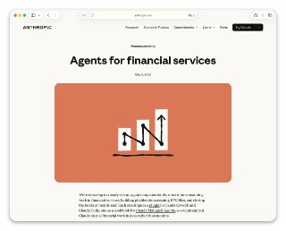
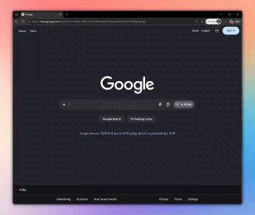

WIREDנמוכה08.05.2026, 00:00
Leaders at the tech giant were skeptical of OpenAI—but wary of pushing it into the arms of Amazon, according to emails dating back to 2018.
אימות 1

Leaders at the tech giant were skeptical of OpenAI—but wary of pushing it into the arms of Amazon, according to emails dating back to 2018.

Messages between Shivon Zilis and Tesla executives reveal plans in 2017 to start a rival AI lab, potentially led by Altman or Demis Hassabis.

סמסונג חצתה שווי של טריליון דולר על רקע הזינוק בביקוש לשבבים ול-AI, אחרי שדיווחה על הכנסות שיא ועלייה חדה ברווח התפעולי. היא מצטרפת ל-TSMC כחברה השנייה באסיה ברף הזה, כשברקע גם דיווח על מגעים עם אפל לייצור שבבים.

Fitbit Air enters the screenless wearables race with Google’s user-friendly software and Gemini-powered health coaching.

Anthropic השיקה חבילת 10 סוכני AI פיננסיים ל-Claude Code, שמיועדים לניתוח דוחות, בניית מודלים וביצוע ניתוחי שוק. לצד זה נוספו תוספים לניהול תזרים מזומנים ואינטגרציה ישירה עם Excel, PowerPoint ו-Word, מה שמרחיב את השימוש בו ככלי עבודה פיננסי.
PT-5.5. #AI #בינהמלאכותית 📱 📱 📱

הטקסט מציג כמה פקודות שימושיות בקודקס: `/goal` לעבודה רציפה עד השלמת יעד, `/side` לצ'אט צדדי באותו הקשר, `/fast` להאצה במחיר של יותר טוקנים ו-`/compact` לסיכום ואיפוס ההקשר כדי לחסוך משאבים.

OpenAI השיקה בקוד פתוח את Privacy Filter, כלי שמזהה ומסיר מידע אישי ורגיש מטקסט לפני שליחתו למערכות AI.

שוחרר תוסף ל-VSCode שמחבר אוטומציה מבוססת n8n עם סוכני AI, ומאפשר להמיר workflows לקבצים קריאים למודלי שפה כדי לנתח, לערוך קוד ולהציע שיפורים.

דוגמה לשימוש ארגוני ב-AI עם ערך עסקי ברור היא חיבור Claude לנתוני קמפיינים ממומנים בפייסבוק ובגוגל, למשל דרך Zapier, כדי להפיק תובנות, לחדד מסרים ולייצר מודעות בקלות.

בין היתר, אפקט ה"פיתה" נוצר מחשיפת וידאו רקע שנבנה ב-AI בזמן מעבר עכבר על התמונה.

OpenAI הוסיפה לקודקס "חיות מחמד" מונפשות שמוצגות מעל כל האפליקציות ומעדכנות בזמן אמת על מצב הסוכנים. אפשר לבחור אחת משמונה דמויות או ליצור דמות אישית דרך `/hatch`, ואז להפעיל אותה מהגדרות `Appearance`; הכותב גם מצרף אתר לשיתוף והתקנה של דמויות שנוצרו.

הפרויקט claude-receipts מפיק אחרי כל שיחה עם AI קבלה שמציגה את צריכת הטוקנים לכל מודל ואת העלות הכספית בשקלים, עם אפשרות לשמור דיגיטלית או להדפיס.
חברת Subquadratic השיקה את SubQ, מודל שפה עם חלון הקשר חריג של 12 מיליון טוקנים, שלדבריה גם זול פי חמישה מ-GPT ו-Claude בזכות ארכיטקטורת "קשב דליל".

י אחרי זה קלוד פשוט לא עוקב. לא בכוונה, זו ההתנהגות שלו. טיפ: אפשר למקם את הקובץ הזה ב-3 מקומות שונים שיש להם תפקיד שונה: 1. כחוק כללי לכל הפרויקטים מעתה והלאה 2. כחוק לפרויקט ספציפי שמשתפים עם צוות שעובד עם git 3.

אנתרופיק כנראה מתכוננת להשיק עוזר פרואקטיבי בשם הקוד "אורביט", שינתח בלילה שיחות ואפליקציות ויציג בבוקר סיכומים, תובנות והמלצות לפעולה.

הכותב מספר כיצד שילב את קלוד אופוס 4.7 עם מודל התמונות החדש של GPT כדי ליצור קרוסלת אינסטגרם על סיפורה של הופ, צ׳יטה מהמדבריום בבאר שבע שעברה התעללות באירלנד וכיום מטופלת בישראל.

בוטוקס, איפור ומה לא. מסכן הנסיך הניגרי הוא מאבד כל עוקץ אפשרי הפרומפט שהשתמשתי בו: Create a hairstyle analysis graphic using this portrait.

ר, הוא לא אומר את דעתו והוא בטח לא המילה האחרונה או מקור אמין במאה אחוז. הוא בסך הכל מודל סטטיסטי שמנחש מה הכי מסתבר שתהיה המילה הבאה, וככה הוא עובר מילה מילה (טוקן-טוקן) ובונה לכם תשובה. אז למה שבע?

הרעיון הוא לאסוף בקשות שחוזרות על עצמן ולהשתמש בהן כבסיס לפיתוח.
בבריטניה נחשף כשל מביך במערכות אימות גיל מבוססות AI: ילדים מצליחים לעקוף אותן בעזרת שפם מצויר, איפור או תאורה שמבגרים את המראה שלהם מול המצלמה. לפי הדיווח, יותר משליש מהילדים כבר מצאו דרכים לעקוף את המערכות, מה שמטיל ספק ביעילותן בחסימת גישה של קטינים לתוכן למבוגרים.

Coinbase מפטרת 14% מעובדיה, כשהמנכ"ל מציג את הזינוק בשימוש ב-AI כסיבה מרכזית: מהנדסים מספקים פיתוחים מהר יותר, גם צוותים לא טכניים מעלים קוד לפרודקשן, ותהליכים רבים עוברים אוטומציה.

הכירו את Sci-Bot, כלי חיוני לכל סטודנט — עוזר בינה מלאכותית (AI) מדעי המבוסס על הארכיון הגדול בעולם של 85 מיליון מחקרים. 🔹 הוא עונה על כל שאלה מדעית, מצטט עבודות ומספק

הערוץ פתוח לשיתופי פעולה מסחריים ופרסום ממומן, בתנאי שהתוכן נותן ערך לעוקבים ונשאר בתחום הטכנולוגיה וה-AI. מי שזה רלוונטי עבורו מוזמן לפנות בפרטי לקבלת פרטים.

הפוסט מציג טענת "חינם", אבל בלי אימות ברור מול המוצר הרשמי, ולכן צריך לראות בזה טענה שדורשת בדיקה.

הפוסט מציג טענת "חינם", אבל בלי אימות ברור מול המוצר הרשמי, ולכן צריך לראות בזה טענה שדורשת בדיקה.

שיאומי פתחה את MiMo V2.5 עם שתי גרסאות, Pro ורגילה, שתיהן עם חלון הקשר של מיליון טוקנים.

תינוק בן חודש בעזה ננשך בפניו בידי חולדה בזמן שישן באוהל, מקרה שממחיש את תנאי החיים הקשים של כ-1.7 מיליון עקורים ברצועה.
טראמפ רואה בחידוש האש "מוצא אחרון", אך בישראל חוששים מהסכם שלא יכלול את הטילים ומבינים: "ארה"ב פועלת לפי האינטרס שלה". סעודיה בלמה את "פרויקט חופש" של טראמפ לפני שהסירה הגבלות, בישראל זעמו: "חטפה רגליים קרות". מהי תוצאה טובה בלבנון, ומה לגבי עזה?

הניסוח הזהיר יותר הוא: טראמפ אמר שהמו"מ עם איראן מתקדם, אך איים כי אם לא תחתום במהירות על הסכם, "תשלם מחיר כבד".
הניסוח הזהיר יותר הוא: ישראל ולבנון יקיימו בשבוע הבא בוושינגטון סבב שיחות שלישי בדרג שגרירים ובכפוף גם לדרגי עבודה, כחלק מהמאמץ האמריקני לייצב את הגבול הצפוני ולקדם הבנות ביטחוניות.

ביחידת אגוז מתארים כיצד שילוב של פשיטות חשאיות, מארבי צלפים ותחבולה מבצעית הוביל להשתלטות על בינת ג'ביל ולהכרעת מחבלי חיזבאללה באזור.
The move follows the $292 million KelpDAO exploit tied to LayerZero-powered bridge infrastructure. Another crypto project is leaving blockchain interoperability protocol LayerZero after the fallout from the $292 million Kelp DAO exploit intensified scrutiny around cross-chain bridge security.
Of the potential slowdown, the firm's chairman Tom Lee said there are "other things to be doing in crypto right now." Shares in the firm (BMNR) dropped nearly 4% on Thursday, but have gained 9% in the last month of trading.

Two papers published this week have reignited debates about the risk posed by “Q-day” to the cryptography that underpins digital assets.

At a conference dedicated to the riskiest traders in finance, Miami's crypto scene appeared far different than during its pandemic-era boom.
World Liberty co-founder Zach Witkoff also said Thursday that the crypto firm is “in the final stages” of receiving bank charter approval from the Trump administration.

אחרי 48 שעות סוערות סביב עזיבת רוני דיילה, הצהובים חזרו למגרש עם 0:4 קל על הפועל פ"ת.

עדכון קצר סביב ה-1:2 הדרמטי על הפועל פ"ת הוריד במעט את מפלס הלחץ בכרמל, אך לא העלים את התחושות הקשות בקרב הנהלת הקבוצה בשל הביקורת מצד הקהל: "כואב לראות שזה התודה למי שהשקיע כסף, זמן ואת

כ-50 אוהדי מכבי חיפה הגיעו לכפר גלים, קיללו את הצוות המקצועי והפסיקו את האימון לפני הפועל פ"ת; בכר אמר שהקבוצה לא בורחת מאחריות.